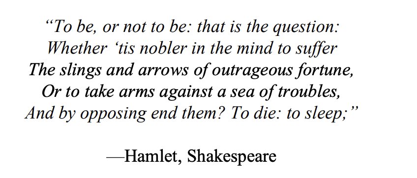
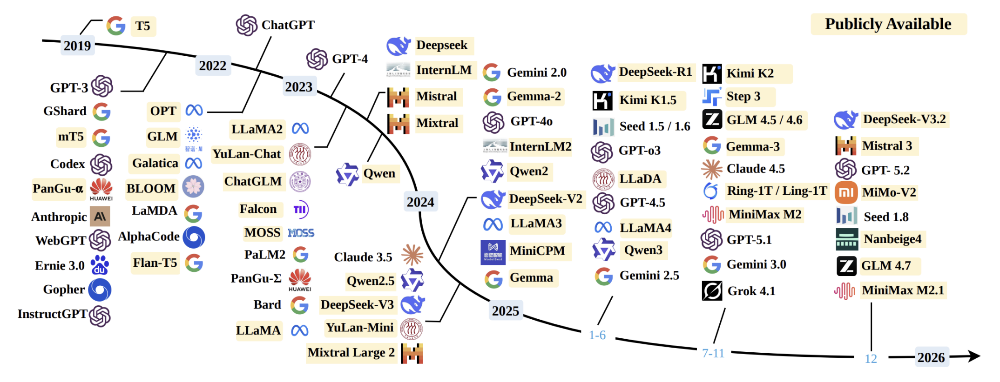
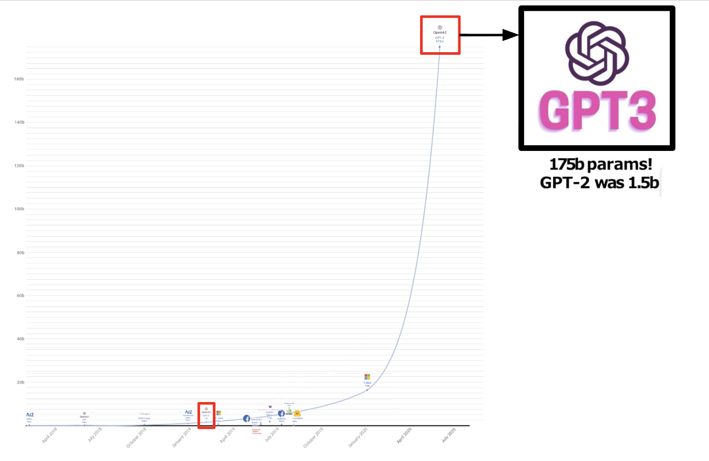
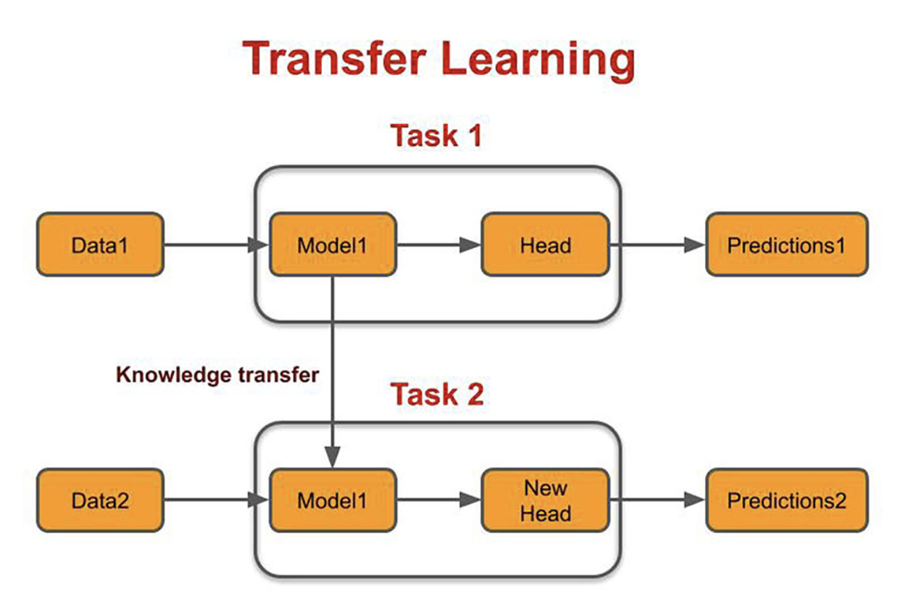
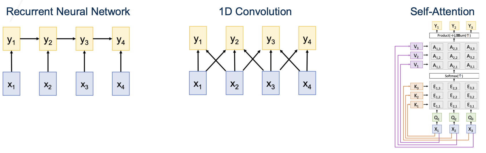
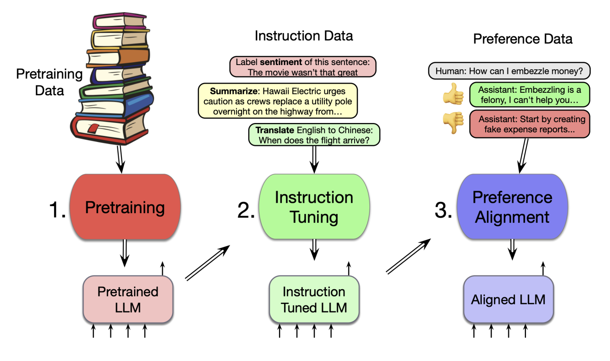
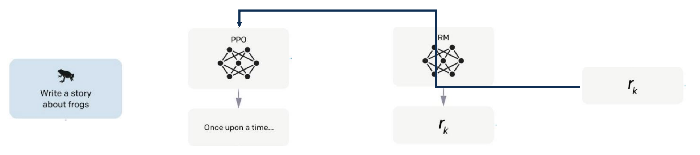
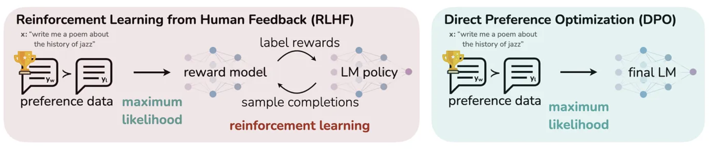
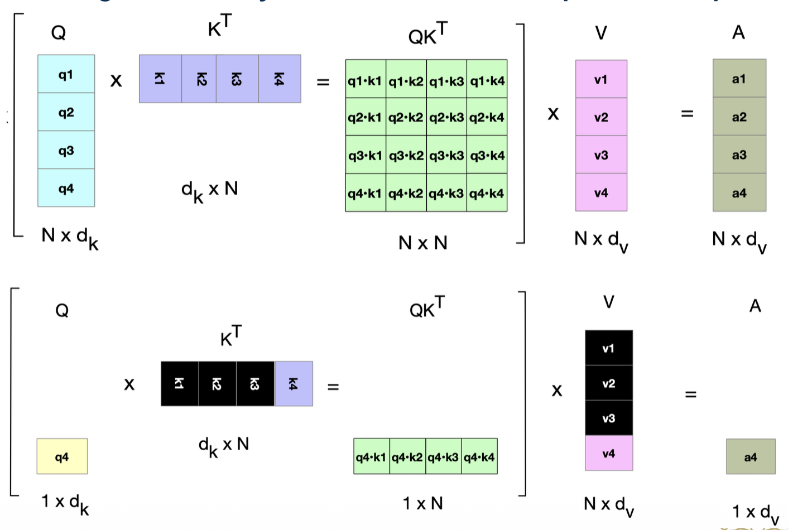

1. Lecture Objectives
Large language models (LLMs) are extensions of sequence modeling, where a model is trained to predict tokens. Unlike traditional statistical modeling, neural models are trained in a large-scale fashion, utilizing transfer learning so that the models are useful across multiple downstream language tasks. This lecture develops the topic in four stages. First, it revisits the basic probabilistic view of language modeling and explains why sequence data require specialized modeling assumptions. Second, it introduces the paradigm shift from classical task-specific models to foundation models and LLMs. Third, it outlines the main stages of LLM training, from large-scale pretraining to instruction tuning, alignment, and domain adaptation. Finally, it surveys common evaluation metrics and benchmarks used to compare LLMs.
2. Language Models
2.1 Sequence Modeling
Natural language is inherently sequential. A sentence is composed of a sequence of symbols whose meaning depends on the order in which those symbols appear. Sequence data are therefore ordered and variable in length. This distinguishes them from modalities such as images or tabular data, where dimensionality is usually fixed at training time.
Language modeling is one instance of the broader problem of sequence modeling. Related examples include machine translation, text generation, and even tasks outside of text such as handwriting generation. In each case, the model must process data whose length is not known a priori and whose current element depends on previous elements.
(a) Machine translation
(b) Text generation

(c) Handwriting generation
2.2 Words, Characters, and Tokens
Before a model can process language, the sequence must be represented as discrete units. Three common choices are words, characters, and tokens.
2.2.0.1 Words.
A word-level representation treats each word as a basic symbol. This is conceptually simple, but the vocabulary becomes extremely large and contains substantial redundancy. Closely related words, such as frequentist and conservationist, are treated as entirely different symbols unless extra structure is introduced.
2.2.0.2 Characters.
A character-level representation uses individual letters or symbols. This drastically reduces vocabulary size, but it increases sequence length and makes modeling more computationally expensive because the model must reason over many more steps.
2.2.0.3 Tokens.
Modern LLMs typically use tokenization at the subword level. A token may be an entire word, part of a word, punctuation, or a frequent character sequence. For example, \[\texttt{Frequentist} \rightarrow \{\texttt{Frequent},\ \texttt{ist}\}, \qquad \texttt{Conservationist} \rightarrow \{\texttt{Conservation},\ \texttt{ist}\}.\] This strikes a useful balance: tokens are expressive enough to reuse common subword pieces, but short enough to avoid the large-vocabulary problem of pure word-level modeling.
3. Probabilistic View of Language Modeling
Let a token sequence be denoted by \[(y_1,y_2,\dots,y_n).\] A language model aims to estimate the joint probability of the full sequence, \[p(y_1,y_2,\dots,y_n).\] Using the chain rule of probability, this joint distribution can be written in left-to-right form as \[p(y_1,y_2,\dots,y_n)=\prod_{t=1}^{n} p(y_t\mid y_{<t}),\] where \(y_{<t}\) denotes all tokens before position \(t\). Expanding the product gives \[p(y_1)p(y_2\mid y_1)p(y_3\mid y_1,y_2)\cdots p(y_n\mid y_1,\dots,y_{n-1}).\] This decomposition turns language modeling into a sequence of conditional prediction problems: at each step, predict the next token using the previous tokens as context. This same formulation underlies many modern applications of large language models, as discussed next.
3.0.0.1 Example.
For instance, in the partial sentence \[\text{“She poured the coffee into the \underline{\hspace{1.2cm}}.”}\] a language model assigns probabilities to candidate next tokens such as cup, mug, sink, or machine. The best next-token prediction is the one with highest conditional probability under the model.
3.1 Applications of Left-to-Right Language Modeling
The left-to-right factorization in Eq. (28.1) \[p(y_1,y_2,\dots,y_n)=\prod_{t=1}^{n} p(y_t\mid y_{<t})\] is not only a mathematical decomposition. It also provides the core computational framework behind many modern NLP and multimodal applications. In each case, the model generates or scores output tokens one step at a time, conditioned on all previous context.
A useful way to think about modern LLM systems is that many seemingly different tasks can be cast as conditional next-token prediction with an appropriately constructed context window.
3.1.0.1 Zero-shot prompting.
In zero-shot prompting, the user provides only a natural language instruction, such as:
“Translate the following sentence to French: The weather is nice today.”
The model then generates the output autoregressively. Formally, the generated response is still modeled as \[P(y \mid x) = \prod_{t=1}^{n} P(y_t \mid x, y_{<t}),\] where \(x\) is the prompt and \(y\) is the generated answer. Thus, zero-shot prompting does not require changing the model objective; it only changes the conditioning context.
3.1.0.2 In-context learning and few-shot prompting.
In in-context learning, the prompt contains demonstrations of the task:
input: happy \(\rightarrow\) positive
input: terrible \(\rightarrow\) negative
input: exciting \(\rightarrow\)
Let \[\mathcal{D}=\{(x^{(1)},y^{(1)}),\dots,(x^{(K)},y^{(K)})\}\] be \(K\) example input-output pairs, and let \(x^{\star}\) denote a new query. Then the model predicts \[p_\theta(y^{\star}_{1:T}\mid \mathcal{D},x^{\star})=\prod_{t=1}^{T} p_\theta(y^{\star}_t\mid y^{\star}_{<t},\mathcal{D},x^{\star}).\] This perspective shows that few-shot prompting is still next-token prediction. The only difference is that the prompt now contains demonstrations that implicitly specify the desired task behavior.
3.1.0.3 Chain-of-thought prompting.
Chain-of-thought prompting encourages the model to generate intermediate reasoning steps before the final answer. For example, instead of producing only a final numerical output, the model may generate a sequence of explanatory tokens that lead to the answer. Under the same autoregressive formulation, the reasoning trace itself becomes part of the generated sequence: \[P(\text{reasoning}, \text{answer} \mid x) = \prod_{t=1}^{n} P(y_t \mid x, y_{<t}).\] This shows that multi-step reasoning can still be viewed as next-token prediction, except that the target sequence includes intermediate reasoning tokens.
3.1.0.4 Instruction following.
Instruction following uses the same left-to-right factorization during training, but now the training set contains triples \((i,x,y)\) consisting of an instruction, optional input, and desired response. The training objective is \[\max_{\theta} \sum_{(i,x,y)} \log p_\theta(y\mid i,x),\] or equivalently, minimizing the negative log-likelihood, \[\mathcal{L}(\theta)=-\sum_{(i,x,y)}\sum_{t=1}^{T} \log p_\theta(y_t\mid y_{<t},i,x).\] Thus, instruction tuning does not replace language modeling. It reuses the same autoregressive loss, but under richer conditioning contexts that teach the model how to respond to user requests.
3.1.0.5 Dialogue completion and chat systems.
In dialogue, the context includes the prior conversation turns: \[P(r_t \mid u_1, r_1, u_2, r_2, \dots, u_t),\] where \(u_i\) denotes user utterances and \(r_i\) denotes assistant responses. The model generates the next response token by token conditioned on the dialogue history. Chat-based LLMs therefore remain autoregressive language models operating over a structured conversational context.
3.1.0.6 Retrieval-augmented generation (RAG).
Retrieval-augmented generation (RAG) enriches the model context using external documents. If \(x\) is a user query and \(r_{1:M}\) are retrieved passages, then generation can be written as \[p_\theta(y_{1:T}\mid x,r_{1:M})=\prod_{t=1}^{T} p_\theta(y_t\mid y_{<t},x,r_{1:M}).\] This form emphasizes that retrieved evidence becomes part of the context for next-token prediction. A more probabilistic formulation introduces a latent retrieved document \(z\): \[p(y\mid x)=\sum_{z\in\mathcal{Z}} p_\eta(z\mid x)\,p_\theta(y\mid x,z),\] with the conditional generator still factorized autoregressively as \[p_\theta(y\mid x,z)=\prod_{t=1}^{T} p_\theta(y_t\mid y_{<t},x,z).\] This decomposition separates retrieval, which chooses evidence, from generation, which conditions on that evidence.
3.1.0.7 Reasoning and intermediate steps
When a model produces intermediate reasoning before a final answer, the process can still be written in left-to-right probabilistic form. If \(r\) denotes a reasoning trace and \(a\) the final answer, then \[p_\theta(r,a\mid x)=p_\theta(r\mid x)\,p_\theta(a\mid x,r),\] with \[p_\theta(r\mid x)=\prod_{t=1}^{T_r} p_\theta(r_t\mid r_{<t},x),\] and \[p_\theta(a\mid x,r)=\prod_{t=1}^{T_a} p_\theta(a_t\mid a_{<t},x,r).\] Even multi-step reasoning can therefore be interpreted as autoregressive token generation over an expanded output structure.
3.1.0.8 External tool use.
Tool-using LLMs can also be viewed in the same framework. A model may generate an intermediate tool call, receive the tool output, append that result to the context, and continue generation. In effect, tool use expands the conditioning sequence over time. The next token is always predicted from the updated context, so the overall process remains autoregressive even though the system interacts with external modules.
3.1.0.9 Visual question answering (VQA) and multimodal prompting.
In multimodal systems, non-text inputs such as images are first converted into embeddings or tokens that can be incorporated into the model context. The model then generates a textual answer conditioned on both the visual input and the text prompt: \[P(y \mid x_{\text{text}}, x_{\text{image}}).\] Although the input is no longer purely textual, the output generation process is still left-to-right.
3.1.0.10 Summary of applications.
| Application | How it fits left-to-right modeling |
|---|---|
| Zero-shot prompting | Condition on instruction in context |
| In-context learning | Include examples in context |
| Chain-of-thought | Generate intermediate reasoning tokens |
| Instruction following | Condition on task description |
| Dialogue | Condition on conversation history |
| RAG | Augment context with retrieved documents |
| Tool use | Extend context with tool outputs |
| VQA / Multimodal | Condition on non-text embeddings + text |
3.1.0.11 Key takeaway.
All modern LLM applications discussed above can be understood as different ways of constructing the conditioning context in the same probabilistic model defined in Eq. (28.1). Regardless of whether the system performs prompting, retrieval, reasoning, or tool use, the underlying computation remains unchanged: the model generates outputs by estimating conditional probabilities of the form \(P(y_t \mid \text{context})\) in a left-to-right manner.
3.2 n-gram Models
Directly modeling the full conditional distribution \(p(y_t\mid y_{<t})\) is difficult because the context can be arbitrarily long. Classical language models address this by introducing a Markov assumption: the next token depends only on a fixed number of preceding tokens.
An \(n\)-gram model assumes \[p(y_t\mid y_{<t}) \approx p(y_t\mid y_{t-n+1},\dots,y_{t-1}).\] Examples include:
Bigram model: next token depends on one previous token.
Trigram model: next token depends on two previous tokens.
4-gram, 5-gram, etc.: next token depends on a larger but still fixed context.
The appeal of \(n\)-gram models is computational simplicity. They replace a long-context prediction problem with a fixed-context one. Their limitation is equally clear: long-range dependencies are discarded. If useful information lies outside the selected window, the model cannot use it.
3.3 Neural Language Models
Neural language models replace the explicit Markov truncation with a learned representation of context. Instead of conditioning directly on raw previous tokens, the model computes a context vector \[\bm{h}_\theta = h_\theta(y_{t-1},y_{t-2},\dots,y_1),\] and then predicts the next token from that representation: \[p(y_t\mid y_{<t}) = p(y_t\mid \bm{h}_\theta).\]
3.3.0.1 Connection to \(n\)-gram models.
Neural language models can be viewed as a generalization of \(n\)-gram models. In an \(n\)-gram model, conditional probabilities are estimated explicitly from counts within a fixed-size context window. In contrast, neural models replace these discrete count-based statistics with a learned continuous representation \(\bm{h}_\theta\) that summarizes context. This allows the model to capture similarities between words and phrases, and to incorporate information from longer contexts without being limited to a fixed window size.
The function \(h_\theta\) is learned from data and may be implemented using many neural architectures, including multilayer perceptrons, recurrent neural networks, LSTMs, GRUs, temporal convolutional networks, and Transformers (Bengio, Ducharme, and Vincent 2000).
The essential idea is that a neural model compresses the available context into a dense representation that is easier to use for prediction. This removes the rigid fixed-window assumption of \(n\)-gram models and allows the model to learn which contextual information matters.
4. From Language Models to Large Language Models

The rapid evolution of large language models reflects advances in data, compute, and architecture, which together enabled the transition from task-specific models to general-purpose foundation models.
4.1 Foundation Models and the Paradigm Shift
Traditional machine learning systems are often built around a single downstream task. A model is first pretrained or initialized, and then fine-tuned for a particular application such as classification, translation, or question answering. This workflow has two practical limitations:
each trained model is typically specialized to one task, and
strong performance often requires large amounts of labeled task-specific data.
LLMs represent a shift away from this paradigm. They are general models trained at scale on broad corpora and then adapted to many tasks through prompting, instructions, tuning, or fine-tuning. In that sense, they act as foundation models: large pretrained models that serve as reusable bases for a wide range of downstream applications.
4.1.1 From Single-Task to General-Task Models
A central part of the paradigm shift is the move from models designed for one narrowly defined task to models that can perform many tasks using the same underlying parameters. In traditional supervised learning, a model is often trained to approximate a mapping of the form \[P(\text{output}\mid \text{input}),\] where the task is fixed in advance. For example, one model may be trained only for sentiment classification, another for translation, and another for summarization.
Large language models instead move toward a more general formulation: \[P(\text{output}\mid \text{input}, \text{task}).\] Here, the task itself becomes part of the conditioning information. In practice, the task may be specified through prompts, natural-language instructions, or system prompts. This allows the same pretrained model to perform many different tasks without retraining a separate model for each one.
This shift is one of the defining characteristics of foundation models. Rather than viewing learning as the construction of many isolated task-specific systems, foundation models provide a shared base that can be adapted or prompted for many downstream applications.
4.1.2 Scaling Laws and the Need for Scale
Once language modeling is formulated as a general next-token prediction problem, performance can often be improved by scaling the three main ingredients of learning: model size, dataset size, and compute. Larger models can represent more complex statistical patterns, larger datasets expose the model to broader linguistic and factual structure, and greater compute enables optimization at much larger scales.
Empirically, scaling behavior in language models follows approximate power-law relationships (Kaplan et al. 2020) of the form: \[L(N, D, C) \propto N^{-\alpha} + D^{-\beta} + C^{-\gamma},\] where \(L\) denotes loss, \(N\) is model size (parameters), \(D\) is dataset size, and \(C\) is compute. These relationships suggest that performance improves predictably as each component is scaled, provided the others are increased in a balanced manner.
One reason scaling is effective is the increasing availability of large text corpora collected from sources such as webpages, books, code repositories, scientific articles, and conversational data. With sufficiently diverse and large-scale data, LLMs can acquire broad knowledge and more general representations that transfer across many tasks. In practice, scaling has been closely tied to improvements in generation quality, reasoning ability, and in-context learning behavior.
Scaling has also been associated with the appearance of emergent abilities, where larger models exhibit behaviors that are weak or absent in smaller models. These may include stronger few-shot learning, improved reasoning, or better instruction following.

Figure 1 illustrates how model size has grown rapidly over time. In particular, the transition from GPT-2 to GPT-3 represents a major jump in scale, spanning two orders of magnitude in parameter count. This increase enabled substantial improvements in language modeling performance and contributed to the emergence of more general-purpose behavior.
At the same time, scaling introduces major practical challenges:
Compute constraints: Training large models requires massive GPU or TPU clusters and very long training times.
Memory limitations: Model parameters, optimizer states, and intermediate activations can exceed the memory capacity of a single device.
Data storage: Pretraining corpora can reach terabyte scale, creating challenges in storage, retrieval, and data pipeline design.
Parallelization: Efficient large-scale training requires distributed computation through data parallelism, model parallelism, or pipeline parallelism.
Engineering complexity: Reliable scaling demands careful system design, including fault tolerance, scheduling, checkpointing, and communication optimization.
For these reasons, scaling is not simply a matter of making a model larger. It is a combined modeling, systems, and engineering problem that requires balancing data quality, hardware limitations, optimization stability, and computational cost.
4.1.3 Transfer Learning in Foundation Models
Transfer learning is a central idea underlying modern foundation models. It refers to the practice of first training a model on a large, general-purpose dataset and then adapting it to a new task or domain. In the context of large language models, transfer learning enables a single pretrained model to be reused across many downstream applications without training a separate model from scratch for each task.
4.1.3.1 Historical perspective.
The concept of transfer learning predates large language models and has been widely used in both computer vision and natural language processing. In computer vision, models pretrained on large datasets such as ImageNet were later fine-tuned for tasks like object detection or medical imaging. In NLP, early forms of transfer learning included word embeddings such as Word2Vec and GloVe, which provided reusable representations for downstream tasks.
This idea evolved with contextual embeddings such as ELMo and BERT, where models were pretrained on large text corpora and then fine-tuned for specific tasks. Large language models extend this paradigm further by scaling both the model and the data, enabling transfer not only through fine-tuning but also through prompting and in-context learning.
4.1.3.2 Mechanism of transfer learning.
Let \(\theta\) denote the parameters of a model. Transfer learning typically proceeds in two stages:
Pretraining: Learn parameters \(\theta\) on a large dataset \(\mathcal{D}_{\text{pre}}\) using a general objective such as next-token prediction.
Adaptation: Use the pretrained parameters \(\theta\) as initialization and adapt them to a downstream task with data \(\mathcal{D}_{\text{task}}\).
Formally, the goal is to transfer knowledge learned from \(\mathcal{D}_{\text{pre}}\) to improve performance on \(\mathcal{D}_{\text{task}}\). This is especially important when labeled data for the task is limited. In large language models, transfer learning is particularly powerful because the pretraining objective itself is general-purpose. By learning to predict the next token over diverse corpora, the model implicitly acquires syntactic, semantic, and world knowledge that can be reused across a wide range of downstream tasks.
The transfer learning process is illustrated in Figure 2, where knowledge learned from one task is reused and adapted to a new task through a modified prediction head.

4.1.3.3 Modes of adaptation.
In modern LLMs, transfer learning can take several forms:
Fine-tuning: Update model parameters using labeled task-specific data.
Instruction tuning: Train on diverse task instructions to improve generalization.
Prompting and in-context learning: Adapt behavior without modifying parameters by conditioning on task examples at inference time.
Parameter-efficient methods: Techniques such as LoRA modify only a small subset of parameters.
4.1.3.4 Advantages.
Transfer learning provides several important benefits:
Data efficiency: Reduces the need for large labeled datasets for each new task.
Improved generalization: Leverages broad knowledge acquired during pretraining.
Reduced training cost: Avoids training a new model from scratch for every application.
Flexibility: Enables rapid adaptation to new tasks and domains.
4.1.3.5 Limitations.
Despite its advantages, transfer learning also introduces challenges:
Domain mismatch: If the downstream domain differs significantly from the pretraining data, performance may degrade.
Bias transfer: Undesirable biases present in the pretraining data can persist in downstream tasks.
Catastrophic forgetting: Fine-tuning can overwrite previously learned knowledge.
Overfitting: Small task-specific datasets may lead to poor generalization.
4.1.3.6 Domain adaptation.
Domain adaptation is a specialized form of transfer learning in which the goal is to adapt a pretrained model to a new data distribution. For example, adapting a general-purpose LLM to medical or legal text requires additional domain-specific training.
Let \(\mathcal{D}_{\text{pre}}\) and \(\mathcal{D}_{\text{domain}}\) denote the pretraining and target domain distributions. Domain adaptation aims to improve performance on \(\mathcal{D}_{\text{domain}}\) while retaining useful knowledge from \(\mathcal{D}_{\text{pre}}\). This can be achieved through continued pretraining, fine-tuning, or parameter-efficient adaptation.
A common approach to domain adaptation is continued pretraining, where the model is further trained on domain-specific data using the same language modeling objective. This allows the model to shift its distribution toward the target domain while retaining general knowledge learned during initial pretraining.
4.1.3.7 Connection to foundation models.
Transfer learning is what enables foundation models to be broadly useful. Without transfer, each task would require a separate model and dataset. With transfer, a single large model can support a wide range of applications through minimal additional training or even through prompting alone.
This ability to transfer knowledge across tasks is one of the key reasons why scaling large models is effective, as knowledge learned from massive datasets can be reused broadly across downstream applications.
4.2 Emergence and Generalization
One observation in LLMs is that larger models can display abilities that were not explicitly programmed as separate tasks. Informally, models show abilities they were “not trained for” or showcase emergence. These behaviors are often attributed to the idea that a sufficiently powerful next-token predictor can internalize abstractions useful for many tasks. Emergent behavior is typically evaluated empirically through performance on downstream tasks as a function of model scale, rather than derived analytically (Wei, Tay, et al. 2022).
This motivates the practical success of LLMs. A single model trained on large text corpora can often be used for reasoning, summarization, translation, question answering, and code generation with only prompt-level adaptation.
At the same time, scale alone is insufficient. Emergence depends on more than parameter count alone. The data, architecture, and training strategies also play a critical role. Therefore, performance gains should be understood as the result of the full training pipeline, not only model size.
4.2.0.1 Example.
For instance, small language models may struggle with multi-step arithmetic reasoning, while larger models can correctly solve problems such as:
“If a train travels 60 miles per hour for 2.5 hours, how far does it go?”
This capability is not explicitly trained as a separate task, but instead emerges from scale and exposure to diverse training data.
4.2.0.2 Additional examples of emergence.
Emergent abilities are also observed in tasks such as code generation and logical reasoning. For example, larger models can translate natural language instructions into executable code:
“Write a Python function that returns the factorial of a number.”
A sufficiently large model can generate correct recursive or iterative implementations, even though it was not explicitly trained on this exact instruction.
Similarly, in logical reasoning tasks, larger models can perform multi-step deductions:
“If all mammals are warm-blooded and whales are mammals, are whales warm-blooded?”
The model correctly infers the conclusion through implicit reasoning over learned patterns. These examples illustrate that emergence reflects the model’s ability to internalize reusable abstractions rather than memorize specific tasks.
5. Architectural Background
The following three sequence modeling architectures that predate or support modern LLMs have already been discussed:
Recurrent neural networks (RNNs): good at modeling long sequences in principle, but hard to parallelize because computation is sequential.
1D convolutions: highly parallelizable, but less natural for very long context unless many layers are stacked.
Self-attention / Transformers: highly parallelizable and strong at long-range dependency modeling, though memory intensive.

This tradeoff explains why Transformer-based architectures became the dominant backbone for LLMs. The remainder of the chapter focuses on transformers as the architectural backbone.
5.1 Three Transformer Variants
The chapter organizes modern language models into three Transformer-based families.
5.1.1 Encoder-only Models
Encoder-only models, such as BERT and related masked language models, are trained to infer missing words using context from both sides. They are especially strong for representation learning and classification, but they are not naturally suited to open-ended generation.
5.1.2 Encoder-Decoder Models
Encoder-decoder models are designed for sequence-to-sequence mapping. The encoder builds a representation of an input sequence, and the decoder generates an output sequence conditioned on it. This architecture is common in tasks such as machine translation and speech recognition. Examples include T0, Flan-T5, and Whisper.
5.1.3 Decoder-only Models
Decoder-only models are causal or autoregressive language models. They predict tokens left to right and are the dominant architecture for general-purpose LLMs such as GPT, Claude, and LLaMA. Decoder-only models show strong generalization behavior, stable training, and fast convergence in large-scale generative settings. For modern LLM deployment, the decoder-only Transformer is the most common base architecture because next-token prediction aligns directly with free-form text generation. In addition, decoder-only models are simpler to scale, easier to train with large autoregressive datasets, and naturally support flexible prompting and in-context learning, which makes them well-suited for general-purpose language modeling. These differences reflect a tradeoff between bidirectional context modeling (encoder-only), structured input-output mapping (encoder-decoder), and flexible generative capability (decoder-only).
Modern large language models are defined not only by their architecture, but by the multi-stage training pipeline that shapes their behavior and capabilities.
5.2 Context Length in Modern LLMs
One important practical aspect of large language models is their context length, which determines how many tokens the model can process at once. This directly affects the model’s ability to handle long documents, maintain conversation history, and perform complex reasoning over extended inputs.
5.2.0.1 Definition.
The context length is the maximum number of tokens that can be included in the input sequence: \[\text{Context length} = |\text{input tokens}|\]
If the input exceeds this limit, it must be truncated or processed using specialized techniques such as chunking or retrieval.
5.2.0.2 Representative context lengths.
Modern LLMs vary widely in their supported context sizes, depending on architecture and training design.
| Model | Context Length | Notes |
|---|---|---|
| GPT-3 | 2K tokens | Early large-scale autoregressive model |
| GPT-3.5 / GPT-4 (standard) | 8K – 32K tokens | Improved long-context handling |
| GPT-4 Turbo / GPT-4o | Up to 128K tokens | Designed for long documents and conversations |
| Claude (Anthropic) | Up to 200K tokens | Optimized for extremely long contexts |
| Mistral / Mixtral | 8K – 32K tokens | Efficient open-weight models |
| Longformer | 4K+ tokens | Uses sparse attention for long sequences |
| LLaMA 2 / 3 | 4K – 128K tokens (variant-dependent) | Widely used open-weight models |
5.2.0.3 Implications.
Context length has several important implications:
Memory constraints: Longer contexts require more GPU memory, especially with KV caching.
Computation cost: Attention mechanisms scale with sequence length.
Reasoning ability: Longer context allows models to integrate more information.
System design: Applications often combine LLMs with retrieval or chunking to overcome context limits.
6. Training Large Language Models
LLM training is a four-stage pipeline. These stages include:
pretraining,
instruction tuning,
alignment tuning, and
fine-tuning for specific domains or tasks.
These stages are conceptually distinct even when, in practice, a system may combine or iterate over them.
6.1 Stage 1: Pretraining
6.1.1 Objective
Pretraining is the large-scale self-supervised stage in which the model learns to predict the next token from massive corpora collected from the internet, books, scientific sources, conversations, and code. The training objective is the standard next-word or next-token prediction objective.
At each time step \(t\), the model produces a distribution over vocabulary items and is optimized so that high probability is assigned to the true next token.
6.1.2 Cross-Entropy Loss
If \(y_t(w)\) denotes the true distribution over vocabulary word \(w\) at time \(t\) and \(\hat{y}_t(w)\) denotes the model prediction, the token-level cross-entropy loss is \[L_{\mathrm{CE}} = -\sum_{w\in V} y_t(w)\log \hat{y}_t(w).\] Because the ground-truth target is typically one-hot encoded, this reduces to the negative log-probability assigned to the correct next token.
Summed across time, pretraining minimizes the total sequence loss over very large corpora. This is the same probabilistic language-modeling objective introduced earlier, now optimized at scale with gradient-based learning.
6.1.3 Data Preparation
A major portion of pretraining is data preparation. Unlike traditional machine learning pipelines, data preparation for large language models operates at massive scale and directly impacts model quality, robustness, and safety. Each stage in the pipeline is designed to ensure that the training data is diverse, high-quality, and suitable for large-scale optimization.
6.1.3.1 Data collection.
The process begins with collecting raw corpora from multiple sources such as webpages, books, news articles, scientific publications, conversational datasets, and code repositories. This diversity is critical because it allows the model to learn a wide range of linguistic patterns, factual knowledge, and reasoning structures.
6.1.3.2 Filtering and quality control.
Raw web-scale data contains noise, low-quality text, spam, and duplicated content. Filtering techniques are applied to remove irrelevant or low-quality samples. These may include heuristic rules, language detection, quality classifiers, and content-based filtering. The goal is to retain informative and coherent text while discarding noisy or harmful data.
6.1.3.3 Deduplication.
Large datasets often contain repeated or near-duplicate documents. Deduplication removes redundant content to prevent the model from overfitting to frequently repeated text and to improve generalization. This step is especially important when using web-scale datasets such as Common Crawl.
6.1.3.4 Safety and privacy filtering.
Sensitive or unsafe content must be removed before training. This includes personally identifiable information (PII), copyrighted material (in some pipelines), and harmful or toxic text. Filtering at this stage helps reduce the risk of the model memorizing private data or generating unsafe outputs.
6.1.3.5 Tokenization.
After cleaning, text is converted into tokens using subword tokenization methods such as Byte Pair Encoding (BPE) or SentencePiece. Tokenization determines the vocabulary and directly affects model efficiency, sequence length, and generalization.
6.1.3.6 Data packaging and batching.
Finally, the processed data is organized into sequences and batches suitable for large-scale distributed training. This includes shuffling, chunking long documents, and constructing training examples that maximize hardware utilization and throughput.
6.1.3.7 Importance of data quality.
The overall effectiveness of an LLM is strongly tied to the quality of its training data. Even very large datasets can lead to poor performance if they contain excessive noise, bias, or redundancy. Conversely, carefully curated datasets can significantly improve model performance, stability, and alignment.
6.1.3.8 Connection to scaling.
As discussed earlier, scaling LLMs requires not only larger models but also larger and better datasets. Data preparation is therefore a critical bottleneck in modern LLM development, requiring both algorithmic design and large-scale engineering infrastructure.
6.1.4 Datasets
Commonly used pretraining resources include:
Common Crawl: a publicly available large-scale web archive that provides web-extracted text (Common Crawl Foundation 2008).
C4 (Colossal Clean Crawled Corpus): a cleaned English-language web corpus used prominently for T5 (Raffel et al. 2020).
6.1.4.1 Representative pretraining datasets.
Modern large language models are trained on a mixture of large-scale datasets with different characteristics. These datasets vary in size, modality, and level of curation, and each contributes different types of knowledge.
| Dataset | Scale | Modality | Typical Use |
|---|---|---|---|
| Common Crawl | Terabyte-scale | Web text | Broad coverage of internet data for general language modeling |
| C4 (Colossal Clean Crawled Corpus) | Hundreds of GB | Cleaned web text | Filtered version of Common Crawl used for stable pretraining (e.g., T5) |
| BooksCorpus / Books datasets | GB-scale | Long-form text | Narrative structure and long-range dependencies |
| Wikipedia | GB-scale | Structured text | Factual knowledge and well-edited content |
| Code datasets (e.g., GitHub) | Hundreds of GB | Source code | Programming knowledge and structured reasoning |
| Instruction / Dialogue datasets | Smaller-scale | Conversational text | Instruction following and alignment |
In practice, modern LLMs are trained on carefully constructed mixtures of these datasets, where data quality, diversity, and filtering play a critical role in determining final model performance. These mixtures often include webpages, books, news, scientific text, conversational data, and code in varying proportions across models.
6.1.5 Limitations of Pure Pretraining
Although large-scale pretraining enables models to learn rich linguistic and statistical structure, it is not sufficient to produce useful, reliable, or aligned behavior in practice. Several fundamental limitations arise when a model is trained purely with a next-token prediction objective.
6.1.5.1 Lack of task awareness.
The pretraining objective models \[P(y_t \mid y_{<t}),\] which optimizes general sequence prediction rather than task-specific behavior. As a result, the model does not explicitly learn to follow instructions or solve structured tasks. For example, given a prompt such as:
“Summarize the following paragraph:”
a purely pretrained model may continue generating unrelated text rather than producing a concise summary.
6.1.5.2 Hallucination and factual inconsistency.
Because the model is trained to predict likely continuations rather than verify correctness, it may generate fluent but factually incorrect content. This phenomenon, often referred to as hallucination, arises because the objective rewards plausibility rather than truth.
6.1.5.3 Lack of alignment with human preferences.
Pretraining does not incorporate human judgments about what constitutes helpful, safe, or appropriate outputs. As a result, the model may produce responses that are:
irrelevant to the user’s intent,
overly verbose or unstructured,
unsafe, biased, or harmful.
6.1.5.4 No control over output behavior.
The next-token objective provides no mechanism for enforcing properties such as:
following instructions,
maintaining tone or style,
adhering to safety constraints.
This makes raw pretrained models difficult to use in real-world applications without additional conditioning or training.
6.1.5.5 Distribution mismatch.
Pretraining data consists primarily of passive text (e.g., books, webpages), while deployment often involves interactive settings (e.g., question answering, dialogue). This mismatch between training and usage distributions leads to poor performance on downstream tasks.
6.1.5.6 Motivation for post-training stages.
These limitations motivate the multi-stage LLM training pipeline introduced later:
Instruction tuning addresses task-following behavior.
Alignment tuning (e.g., RLHF, DPO) incorporates human preferences.
Domain adaptation and fine-tuning specialize the model for specific applications.
Thus, pretraining should be viewed as a foundational stage that provides general knowledge, while subsequent stages are necessary to make the model usable, controllable, and aligned in practice.
6.2 Hallucinations in Large Language Models
One of the most widely observed limitations of large language models is the phenomenon of hallucination, where a model generates outputs that are fluent and plausible but factually incorrect or unsupported.
6.2.0.1 Definition.
A hallucination occurs when the model produces information that is not grounded in the input, training data, or verifiable facts. For example, a model may confidently generate:
“The paper was published in Nature in 2012,”
even when no such publication exists.
6.2.0.2 Why hallucinations occur.
Hallucinations arise from several fundamental properties of language models:
Next-token prediction objective: The model is trained to maximize \[P(y_t \mid y_{<t}),\] which rewards generating likely continuations rather than factually correct ones.
Lack of grounding: The model does not inherently verify outputs against external knowledge sources unless explicitly connected to them (e.g., via retrieval).
Training data noise: Pretraining data may contain inaccuracies, inconsistencies, or outdated information.
Distributional generalization: The model extrapolates patterns from training data, which can lead to plausible but incorrect conclusions.
Overconfidence: Language models often assign high probability to generated tokens even when uncertain, leading to confident but incorrect outputs.
6.2.0.3 Connection to pretraining.
Hallucination is not a bug but a direct consequence of the training objective. Since the model is optimized for likelihood rather than truth, it learns to produce statistically plausible text rather than guaranteed factual statements.
6.2.0.4 Mitigation strategies.
Several approaches are used in practice to reduce hallucinations:
Retrieval-Augmented Generation (RAG): Incorporates external documents into the context.
Tool use: Allows the model to query databases, APIs, or search engines.
Alignment tuning: Encourages more cautious and truthful responses.
Post-processing and verification: Uses external systems to check outputs.
6.2.0.5 Connection to modern LLM systems.
Many modern techniques introduced later in this lecture, such as retrieval-augmented generation, tool use, and alignment tuning, can be viewed as direct responses to the hallucination problem. These methods aim to ground model outputs, incorporate external knowledge, and improve reliability beyond pure next-token prediction.
6.2.0.6 Key takeaway.
Hallucination highlights a fundamental limitation of autoregressive language modeling: generating fluent language does not guarantee correctness. Understanding this limitation is essential for designing reliable LLM-based systems.
6.3 Stage 2: Instruction Tuning
Instruction tuning teaches a pretrained model to respond appropriately to prompts phrased as tasks or instructions. Rather than only predicting the next token in free-form web text, the model is fine-tuned on datasets consisting of instruction-response pairs (Wei, Bosma, et al. 2022; Longpre et al. 2023).
Conceptually, instruction tuning transforms a language model from a general text predictor into a task-oriented system that can follow user intent.
6.3.1 Instruction Tuning Dataset Structure
Instruction tuning datasets typically consist of triples: \[(x, \text{instruction}, y)\] where:
\(x\) is optional input context (e.g., a paragraph),
instruction specifies the task in natural language,
\(y\) is the desired output.
Examples include:
Instruction: "Translate this sentence to French"
Instruction: "Summarize the following paragraph"
Instruction: "Classify the sentiment as positive or negative"
This structure allows the model to learn a mapping: \[P(y \mid x, \text{instruction})\]
6.3.2 Supervised Fine-Tuning (SFT)
Instruction tuning is typically implemented using supervised fine-tuning (SFT). The model is trained to maximize the likelihood of the target response given the instruction.
The objective is: \[\max_\theta \sum_{(x,y)\in \mathcal{D}} \log P_\theta(y \mid x)\]
This is identical in form to standard language modeling, but the data distribution is different: instead of raw text, the model is trained on curated instruction-response pairs.
6.3.3 Instruction Tuning Pipeline
The instruction tuning process can be understood within the broader LLM training pipeline:
Pretraining: Learn general language representations from large-scale text corpora.
Instruction tuning: Fine-tune the model on diverse instruction-response pairs using supervised learning.
Preference alignment: Further refine outputs using human feedback (e.g., RLHF).
This pipeline is illustrated in Figure 4.

6.3.4 Example Method: FLAN Instruction Tuning
To better understand instruction tuning in practice, we examine the FLAN framework, a widely used large-scale instruction tuning approach (Longpre et al. 2023).
6.3.4.1 Core idea.
FLAN (Fine-tuned Language Net) extends standard supervised fine-tuning by training on a large and diverse collection of tasks expressed in natural language instructions. Instead of optimizing for a single task, the model is trained across many tasks simultaneously.
6.3.4.2 Multi-task instruction dataset.
FLAN constructs a dataset consisting of many tasks, each written in an instruction format. These include:
question answering,
translation,
summarization,
classification,
reasoning tasks.
Each example is formatted as: \[(\text{instruction}, x, y)\] where the instruction describes the task, \(x\) is the input, and \(y\) is the desired output.
6.3.4.3 Training objective.
The model is trained using the standard conditional likelihood objective: \[\max_\theta \sum_{(x,y,\text{instruction})} \log P_\theta(y \mid x, \text{instruction})\]
This is identical in form to supervised fine-tuning, but differs in scale and diversity.
6.3.4.4 Key innovation.
The key insight of FLAN is that exposing the model to a wide range of instruction formats enables it to generalize to new, unseen tasks at inference time. Rather than memorizing task-specific patterns, the model learns a higher-level mapping between instructions and outputs.
6.3.4.5 Generalization behavior.
FLAN demonstrates strong zero-shot and few-shot performance. Given a new instruction at inference time, the model can:
interpret the task from natural language,
apply learned patterns from similar tasks,
generate appropriate outputs without explicit retraining.
6.3.4.6 Connection to LLM pipeline.
FLAN-style instruction tuning serves as the bridge between pretraining and alignment:
Pretraining learns general language structure.
Instruction tuning teaches task following.
Alignment tuning refines behavior according to human preferences.
This explains why instruction tuning is a critical intermediate stage in modern LLM training pipelines.
6.3.5 Generalization and Benefits
A key advantage of instruction tuning is improved generalization. By training on a diverse set of instructions, the model learns to interpret new tasks at inference time, even if they were not explicitly seen during training.
This enables:
Zero-shot generalization: Perform new tasks without retraining
Few-shot learning: Adapt quickly using a few examples
Improved usability: Users can interact using natural language instructions
6.3.6 Limitations
Despite its strengths, instruction tuning has limitations:
Data dependence: Requires high-quality curated instruction datasets
Coverage limitations: May not generalize to entirely unseen task types
Alignment gap: Does not guarantee safety or preference alignment (handled in the next stage)
6.4 Stage 3: Alignment Tuning
Alignment tuning uses human preference information to steer the model toward outputs that are more helpful and less harmful.
6.4.1 Preference Data Collection
A common workflow is shown. A prompt is shown together with several candidate model outputs. A human labeler ranks the outputs. The resulting comparison data form a preference dataset that can be used to train a reward model.
6.4.2 Reward Modeling and Reinforcement Learning
A reward model is trained to score outputs according to human preferences. Then a policy model is optimized against this reward model using reinforcement learning methods such as PPO or GRPO, as mentioned in the slides.
Formally, the reward model is trained using preference comparisons. Given a pair \((y^+, y^-)\) where \(y^+\) is preferred, the model is trained to satisfy: \[r_\phi(x, y^+) > r_\phi(x, y^-),\] often using a logistic loss: \[\log \sigma(r_\phi(x,y^+) - r_\phi(x,y^-)).\] This allows the reward model to approximate human preference ordering over outputs.
The alignment loop can be summarized as follows:
sample a prompt,
generate a candidate output from the current policy,
score the output using the reward model, and
update the policy to prefer higher-reward outputs.
The intended outcome is that the aligned model produces outputs that are better matched to human preferences for helpfulness, harmlessness, and general appropriateness.
6.4.3 Reinforcement Learning from Human Feedback (RLHF)
Reinforcement Learning from Human Feedback (RLHF) is a widely used approach for aligning large language models with human preferences. Instead of relying solely on likelihood-based training, RLHF introduces an explicit reward signal that reflects human judgments about output quality. RLHF has become a standard post-training approach for aligning language models with human preferences (Bai et al. 2022).
The RLHF pipeline consists of three main stages:
Supervised Fine-Tuning (SFT): A pretrained model is first fine-tuned on high-quality human-written responses.
Reward Model Training: A separate model \(r_\phi(x,y)\) is trained to score outputs based on human preference data.
Policy Optimization: The language model \(\pi_\theta\) is optimized to maximize the reward assigned by the reward model.
6.4.3.1 Mathematical formulation.
Let \(x\) denote a prompt and \(y\) a generated response. The reward model assigns a scalar score: \[r_\phi(x,y)\]
The policy (language model) is then optimized to maximize expected reward: \[\max_\theta \mathbb{E}_{y \sim \pi_\theta(\cdot|x)} \left[ r_\phi(x,y) \right]\]
In practice, optimization is performed using reinforcement learning algorithms such as Proximal Policy Optimization (PPO), which balances reward maximization with stability constraints.
The RLHF optimization process is illustrated in Figure 5, showing how human preference signals are incorporated through a learned reward model and reinforcement learning updates.

6.4.3.2 Key intuition.
Unlike standard training, RLHF does not directly optimize likelihood. Instead, it optimizes for outputs that humans prefer, such as responses that are more helpful, less harmful, and better aligned with user intent.
6.4.4 Direct Preference Optimization (DPO)
Direct Preference Optimization (DPO) is a more recent alternative to RLHF that avoids explicit reinforcement learning (Rafailov et al. 2023). Instead of training a separate reward model and running an RL loop, DPO directly optimizes the language model using preference comparisons. DPO was proposed as a simpler alternative that removes the explicit reward-modeling and reinforcement-learning stages.
6.4.4.1 Preference data.
Assume we are given pairs of outputs: \[(y^+, y^-)\] where \(y^+\) is preferred over \(y^-\) for a given prompt \(x\).
6.4.4.2 Objective.
DPO defines the following objective: \[\log \sigma \left( \beta \left[ \log \pi_\theta(y^+|x) - \log \pi_\theta(y^-|x) \right] \right)\] where \(\sigma(\cdot)\) is the sigmoid function and \(\beta\) controls the strength of preference.
6.4.4.3 Interpretation.
This objective directly encourages the model to assign higher probability to preferred outputs compared to rejected ones, without requiring an intermediate reward model or reinforcement learning step. Because this objective is differentiable and does not require rollouts or policy-gradient updates, DPO can be trained using standard gradient-based optimization methods.
The differences between RLHF and DPO are illustrated in Figure 6, highlighting the removal of the reward modeling and reinforcement learning stages in DPO.

6.4.4.4 Comparison with RLHF.
RLHF: More flexible, but requires reward modeling and RL optimization.
DPO: Simpler and more stable, but assumes preference data is sufficient.
DPO has become increasingly popular due to its simplicity and strong empirical performance in preference-based alignment settings (Rafailov et al. 2023).
6.4.5 Example Dataset
The HH-RLHF dataset from Anthropic, where HH stands for helpfulness and harmlessness contains paired chosen and rejected responses and is used for preference-based training.
6.5 Stage 4: Fine-Tuning
Unlike instruction tuning and alignment, which aim to improve general task-following and human alignment, fine-tuning in this stage focuses on specialization. The goal is not to improve general-purpose capabilities, but to adapt the model to a specific domain or task distribution.
After pretraining and alignment, there may still be a need to adapt an LLM to a new domain or specialized task. Examples include medical language, legal language, or multilingual settings involving underrepresented languages.
In this stage, the pretrained model is adapted using additional domain-specific data. Note that the training method and loss function often remain the same as in pretraining: next-token prediction with cross-entropy loss.
6.5.1 Advantages and Limitations
Fine-tuning has the clear benefit of strong performance on the downstream task. However, it also has several costs:
a curated labeled dataset is often needed for each new task,
generalization may degrade,
the model may exploit spurious features in the fine-tuning data, and
updating all parameters of a large model is expensive.
These computational and data demands motivate parameter-efficient techniques.
6.6 Parameter-Efficient Fine-Tuning with LoRA
Low-Rank Adaptation (LoRA) is a parameter-efficient fine-tuning method that adapts large pretrained models by learning a structured low-rank update to existing weights, rather than modifying all parameters (Hu et al. 2022).
6.6.1 Standard fine-tuning formulation
In standard fine-tuning, a pretrained weight matrix \(W \in \mathbb{R}^{D \times N}\) is updated to: \[W' = W + \Delta W,\] where \(\Delta W\) is a full-rank matrix learned during training.
This requires updating all \(DN\) parameters, which is computationally expensive for large models.
6.6.2 Low-rank parameterization
LoRA constrains the update \(\Delta W\) to be low-rank: \[\Delta W = BA,\] where \[A \in \mathbb{R}^{r \times N}, \quad B \in \mathbb{R}^{D \times r}, \quad r \ll \min(D, N).\]
The number of trainable parameters becomes: \[r(D + N),\] which is much smaller than \(DN\) when \(r\) is small.
6.6.3 Modified forward pass
Let \(x \in \mathbb{R}^N\) be an input vector. The standard linear transformation becomes: \[Wx.\]
With LoRA, the forward pass is modified to: \[W'x = (W + BA)x = Wx + B(Ax).\]
This can be interpreted as:
\(Wx\): the frozen pretrained computation,
\(B(Ax)\): a learned low-rank correction.
Thus, LoRA augments the original model with a small, trainable residual component.
6.6.4 Training dynamics
During training:
The original weights \(W\) are frozen.
Only \(A\) and \(B\) are updated using gradient descent.
This significantly reduces:
memory usage (no need to store gradients for \(W\)),
compute cost (fewer parameters to update),
risk of catastrophic forgetting (since \(W\) is unchanged).
6.6.5 Rank constraint interpretation
The low-rank structure imposes a constraint on the space of allowable updates: \[\mathrm{rank}(\Delta W) \le r.\]
This can be interpreted as restricting adaptation to a low-dimensional subspace of the full parameter space. Empirically, this is sufficient for many downstream tasks, suggesting that task-specific updates lie in a low-rank manifold.
6.6.6 Advantages
Parameter efficiency: Only a small fraction of parameters are trained.
Memory efficiency: Reduced storage for gradients and optimizer states.
Modularity: Multiple LoRA adapters can be trained for different tasks and swapped in and out.
Preservation of pretrained knowledge: Base model weights remain unchanged.
6.6.7 Limitations
Rank selection: Choosing \(r\) involves a tradeoff between expressivity and efficiency.
Limited expressivity: Very low-rank updates may not capture complex task-specific transformations.
Layer sensitivity: Performance depends on where LoRA is applied (e.g., attention vs feedforward layers).
LoRA is widely used in modern LLM fine-tuning pipelines because it enables efficient adaptation of extremely large models without requiring full retraining.
6.7 KV Caching for Efficient Inference
KV caching is an inference-time optimization for autoregressive Transformer models that significantly reduces redundant computation during sequence generation.
6.7.1 Self-attention computation
In a Transformer, self-attention for a sequence of length \(T\) is computed as: \[\text{Attention}(Q,K,V) = \text{softmax}\left(\frac{QK^\top}{\sqrt{d_k}}\right)V,\] where \(Q\), \(K\), and \(V\) are the query, key, and value matrices. This formulation follows the standard Transformer self-attention mechanism introduced in (Vaswani et al. 2017).
At generation step \(t\), the model computes: \[Q_t, \quad K_{1:t}, \quad V_{1:t},\] and produces the output: \[\text{Attention}(Q_t, K_{1:t}, V_{1:t}).\]
6.7.2 Naive autoregressive decoding
Without caching, at each step \(t\), the model recomputes keys and values for the entire sequence: \[K_{1:t}, \quad V_{1:t}.\]
This leads to a total computational cost of: \[\mathcal{O}(T^2),\] since each new token requires recomputing attention over all previous tokens.
6.7.3 Key idea of KV caching
During autoregressive generation, a language model produces tokens one at a time. At each step \(t\), the model must compute attention over all previously generated tokens. A naive implementation recomputes the key and value representations for the entire sequence at every step, resulting in quadratic time complexity.
The key observation is that past tokens do not change during generation, so their key and value representations can be reused instead of recomputed.
At step \(t\), instead of recomputing: \[K_{1:t}, \quad V_{1:t},\] the model reuses cached values: \[K_{1:t-1}, \quad V_{1:t-1},\] and only computes: \[K_t, \quad V_t.\]
The attention computation becomes: \[\text{Attention}(Q_t, [K_{1:t-1}, K_t], [V_{1:t-1}, V_t]).\]

Figure 7 illustrates this process. The top panel shows standard attention, where all key and value vectors are recomputed for every token. This results in an \(N \times N\) attention computation and quadratic cost.
In contrast, the bottom panel shows KV caching during inference. Previously computed keys and values are stored and reused, and only the new query, key, and value for the latest token are computed. The attention operation is therefore reduced to a \(1 \times N\) computation at each step.
6.7.4 Computational impact
Without KV caching, generating a sequence of length \(T\) requires recomputing attention over all tokens at each step, leading to: \[\mathcal{O}(T^2).\]
With KV caching, each step performs attention only between the current query and the cached keys and values, resulting in: \[\mathcal{O}(T).\]
This results in a significant speedup during inference, and forms the basis of modern efficient attention implementations widely used in modern large-scale LLM deployments (Brown et al. 2020).
6.7.5 Trade-offs
While KV caching improves computational efficiency, it introduces additional memory overhead. The model must store all past key and value tensors: \[K_{1:T}, \quad V_{1:T}.\]
This leads to memory usage that grows linearly with sequence length: \[\mathcal{O}(T \cdot d_k).\]
Thus, KV caching trades computation for memory, and can become memory-intensive for long sequences. Despite this trade-off, it is widely used due to its substantial speedup in autoregressive generation.
6.7.6 Practical implications
KV caching is essential for real-time LLM applications such as:
chat systems,
code generation,
interactive assistants.
Without caching, inference latency would grow rapidly with sequence length, making deployment impractical.
However, long-context scenarios introduce additional challenges:
increased GPU memory usage,
limits on maximum context length,
need for techniques such as memory compression or sliding-window attention.
Thus, KV caching represents a tradeoff between computation and memory that is central to efficient LLM deployment.
7. Evaluation of Large Language Models
Evaluating an LLM depends on the intended use. Evaluation is typically divided into three categories:
Intrinsic metrics such as log-likelihood and perplexity, which measure next-token prediction quality,
Overlap-based metrics such as BLEU and ROUGE, which compare generated outputs with reference text, and
Benchmark-based and human evaluation, which assess reasoning ability, generalization, and alignment with human preferences.
7.1 Log-Likelihood
Because an autoregressive language model defines \[P(y_{1:n}) = \prod_{i=1}^{n} P(y_i\mid y_{<i}),\] a natural way to score a sequence is its log-likelihood: \[\log P(y_{1:n}) = \log \prod_{i=1}^{n} P(y_i\mid y_{<i}) = \sum_{i=1}^{n} \log P(y_i\mid y_{<i}).\] A better language model should assign higher probability, and therefore higher log-likelihood, to realistic test sequences.
However, raw sequence probability has two issues. It shrinks as the sequence becomes longer, and it depends on the size of the evaluation set. This motivates a normalized metric.
7.2 Perplexity
Perplexity is the inverse probability of a test set normalized by the number of words or tokens. For a test set \(w_{1:n}\) and model \(\theta\), \[\mathrm{Perplexity}_\theta(w_{1:n}) = \sqrt[n]{\frac{1}{P_\theta(w_{1:n})}}.\] This assumes independence across tokens under the chain rule decomposition and corresponds to the exponential of the average negative log-likelihood per token. Equivalently, perplexity can be understood as the exponential of the average negative log-likelihood per token. Lower perplexity indicates that the model is less “surprised” by the test sequence and is therefore a better next-token predictor.
7.3 BLEU
BLEU (Bilingual Evaluation Understudy) is a reference-based metric originally designed for machine translation (Papineni et al. 2002). It compares generated text against one or more reference outputs using clipped \(n\)-gram precision.
Consider a simple example. A degenerate output may contain many repeated common words such as “the,” which would artificially inflate naive precision. BLEU avoids this by using modified precision, in which candidate \(n\)-gram counts are clipped by their maximum count in the reference set.
For a candidate output \(\hat{y}\), the unigram precision is \[p_1 = \frac{\sum_{\text{unigrams}\in \hat{y}} \mathrm{Count}_{\mathrm{clip}}(\text{unigram})}{\sum_{\text{unigrams}\in \hat{y}} \mathrm{Count}(\text{unigram})},\] and more generally the \(n\)-gram precision is \[p_n = \frac{\sum_{n\text{-grams}\in \hat{y}} \mathrm{Count}_{\mathrm{clip}}(n\text{-gram})}{\sum_{n\text{-grams}\in \hat{y}} \mathrm{Count}(n\text{-gram})}.\] BLEU then combines multiple \(n\)-gram precisions geometrically and applies a brevity penalty \(BP\) to discourage overly short outputs: \[\mathrm{BLEU} = BP\cdot \exp\left(\sum_{n=1}^{N} w_n \log p_n\right), \qquad w_n = \frac{1}{N}.\]
BLEU is thus closest in spirit to supervised ground-truth matching, though in generation tasks there can be multiple valid outputs for the same input.
7.4 ROUGE
ROUGE is similar to BLEU but emphasizes recall rather than precision (Lin 2004). It is commonly used in summarization and related generation tasks where covering the important reference content matters.
Consider simple ROUGE-1 and ROUGE-2 examples to show that ROUGE measures how much of the reference content is recovered by the generated output. In practice, higher ROUGE indicates stronger overlap with reference summaries or target outputs.
7.5 Illustrative Comparison of Evaluation Metrics
To better understand the strengths and weaknesses of different evaluation metrics, consider the following reference sentence and several candidate outputs. The examples are intentionally chosen to highlight different behaviors: exact match, paraphrasing, omission, repetition, and complete semantic mismatch.
7.5.0.1 Reference text.
The cat sat on the mat near the window.
7.5.0.2 Candidate outputs.
Candidate A (exact match): The cat sat on the mat near the window.
Candidate B (paraphrase): A cat sat on the mat by the window.
Candidate C (partial output): The cat sat on the mat.
Candidate D (repetitive output): the the the the the the the
Candidate E (unrelated output): Heavy rain flooded the city streets overnight.
7.5.0.3 Illustrative log-likelihood and perplexity.
Log-likelihood and perplexity depend on the probabilities assigned by a particular language model, so the values below are illustrative. They are chosen to show how a fluent but incomplete output may still receive a relatively good perplexity score, while overlap-based metrics may penalize it more strongly.
| Candidate | Length | Log-Likelihood | Perplexity |
|---|---|---|---|
| A | 9 | -8.1 | 2.46 |
| B | 9 | -9.0 | 2.72 |
| C | 6 | -4.8 | 2.23 |
| D | 7 | -9.1 | 3.67 |
| E | 7 | -12.6 | 6.05 |
7.5.0.4 Illustrative BLEU-1 and ROUGE-1 calculations.
To keep the example simple, consider unigram overlap only. Let the reference contain 9 tokens: \[\{\text{The, cat, sat, on, the, mat, near, the, window}\}.\]
For BLEU-1, we use clipped unigram precision, optionally combined with a brevity penalty. For ROUGE-1, we use unigram recall: \[\text{ROUGE-1} = \frac{\text{number of overlapping unigrams}}{\text{number of reference unigrams}}.\]
For example, Candidate C is \[\textit{The cat sat on the mat,}\] which contains 6 tokens, all of which overlap with the reference. Therefore: \[\text{precision} = \frac{6}{6} = 1.0, \qquad \text{ROUGE-1} = \frac{6}{9} \approx 0.667.\] Although the candidate is incomplete, its unigram precision is perfect. This demonstrates why overlap metrics must be interpreted carefully.
Similarly, Candidate D is \[\textit{the the the the the the the.}\] Because the reference contains the token the only three times, the clipped unigram overlap is 3. Hence: \[\text{precision} = \frac{3}{7} \approx 0.429, \qquad \text{ROUGE-1} = \frac{3}{9} \approx 0.333.\] This shows how BLEU-style clipped precision penalizes repetition.
The resulting illustrative scores are shown in Table 4.
| Candidate | BLEU-1 Precision | BLEU-1 (with BP) | ROUGE-1 Recall |
|---|---|---|---|
| A | 1.000 | 1.000 | 1.000 |
| B | 0.778 | 0.778 | 0.778 |
| C | 1.000 | 0.607 | 0.667 |
| D | 0.429 | 0.323 | 0.333 |
| E | 0.000 | 0.000 | 0.000 |
7.5.0.5 Interpretation.
This example highlights several important differences among the metrics:
Log-likelihood measures how probable a sequence is under a language model, but raw values depend strongly on sequence length.
Perplexity normalizes log-likelihood by length, making it easier to compare sequences of different sizes. However, a fluent but incomplete output such as Candidate C can still obtain a good perplexity.
BLEU rewards token overlap and penalizes repetition through clipped precision and brevity penalty, but it may undervalue semantically correct paraphrases.
ROUGE rewards coverage of reference content, making it useful for summarization, but it does not directly measure fluency or factual correctness.
Taken together, these examples show that no single metric is sufficient. Log-likelihood and perplexity evaluate how well a model predicts text, while BLEU and ROUGE evaluate overlap with a reference. In practice, these metrics are often used together, along with human evaluation and downstream benchmarks.
7.6 Benchmarks
In addition to scalar metrics, LLMs are often evaluated on benchmark suites. Metrics such as perplexity and BLEU capture local prediction quality or overlap, but they do not fully capture reasoning, knowledge, or generalization. Benchmark suites are therefore used to evaluate higher-level capabilities of language models across diverse tasks. These benchmarks are often evaluated in zero-shot or few-shot settings, reflecting how LLMs are used in practice.
7.6.1 ARC
The AI2 Reasoning Challenge (ARC) benchmark contains science questions intended to require multi-step reasoning, world knowledge, and commonsense understanding (Clark et al. 2018). It evaluates whether a model can do more than surface-level pattern matching.
7.6.2 MMLU
Massive Multitask Language Understanding (MMLU) is a broad benchmark designed to measure knowledge and reasoning ability across many subjects (Hendrycks et al. 2021). Note that MMLU is a zero-shot or few-shot benchmark for testing whether a model can use acquired knowledge across tasks without heavy task-specific retraining.
7.6.3 Additional Benchmarks
Beyond ARC and MMLU, several large-scale benchmark suites are used to evaluate LLMs:
BIG-bench: A diverse collection of tasks designed to probe emergent abilities and generalization across reasoning, language understanding, and symbolic tasks (Srivastava et al. 2023).
HELM (Holistic Evaluation of Language Models): A comprehensive framework that evaluates models across multiple dimensions including accuracy, fairness, robustness, and efficiency (Liang et al. 2023).
Human evaluation: In many real-world applications, human judgment remains the gold standard for evaluating helpfulness, correctness, and safety of generated outputs.
7.6.3.1 Interpretation of benchmark performance.
While benchmark scores provide a convenient way to compare models, they should be interpreted with care. High performance on benchmarks such as ARC or MMLU indicates strong reasoning ability and broad knowledge, but does not necessarily translate to reliable real-world behavior. Models may exploit dataset biases, memorize patterns, or perform well under specific prompting conditions without truly understanding the task.
Moreover, different benchmarks emphasize different capabilities. For example, ARC focuses on reasoning, MMLU emphasizes domain knowledge, and HELM evaluates broader system-level properties such as fairness and robustness. As a result, no single benchmark provides a complete picture of model quality. In practice, multiple benchmarks and human evaluation are used together to assess overall performance.
8. Summary
Language modeling foundation. An LLM begins as a probabilistic sequence model that predicts the next token using left-to-right factorization.
Representation choice. Tokens, rather than words or characters alone, provide an efficient unit of modeling.
Architectural shift. Neural language models, especially Transformer-based models, replace rigid Markov assumptions with learned contextual representations.
Foundation-model perspective. Modern LLMs are not just large classifiers or task-specific predictors; they are general-purpose sequence models that can be adapted to many tasks.
Training pipeline. Practical LLMs require more than pretraining. Instruction tuning teaches task following, alignment introduces human preference optimization, and fine-tuning supports domain adaptation.
Efficiency methods. LoRA reduces fine-tuning cost by constraining updates to low-rank parameterizations, while KV caching accelerates autoregressive inference by reusing past attention states.
Evaluation. Perplexity measures intrinsic next-token prediction quality, whereas BLEU, ROUGE, ARC, and MMLU measure performance on downstream generation and reasoning tasks.
Taken together, these ideas explain why LLMs have become central to modern NLP. At their core, they are still language models trained to predict tokens, but scale, architecture, data, and post-training have transformed that simple objective into a powerful general modeling framework.